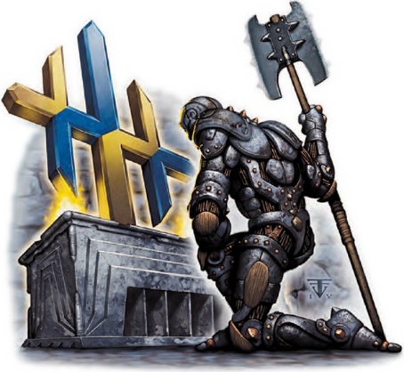

没有人出生时就是邪恶的。恶魔以我们的心欲为食，从我们出生的那一刻起，它们就想引诱我们走上它们的黑暗道路。人无完人，即便是最优秀的人也可能堕入黑暗。但是要铭记:那些误入歧途的孩子并不是敌人——他们只是受害者。你们执掌着那火焰。不要用它去焚烧那些误入歧途的人；相反的，你们要用它驱散阴影，把他们带回到光明中来。
——提拉·麦伦《致圣堂武士们》
当人类第一次来到科瓦雷时，他们感恩寇·柯兰（Kol Korran）守护着他们成功渡海。伽利法一世（King Galifar I）相信是杜·哈拉（Dol Arrah）引导他走向胜利，并希望奥林（Aureon）能够指引他统治他的国家。但是天命诸神的信仰并非人类原创的。探索者们在希恩德瑞克的发现过一座庞大的供奉欧拉隆·律法使（Ouralon Lawbringer）——在人类文明史前的数万年，被巨人们崇拜的法律和知识之神——的圣殿。
千百年来，天命诸神一直都是伽利法五国的主流信仰。但是近数个世纪，事情有了不一样的发展。在瑟雷恩，一位年轻的圣武士将国家从恶魔的统治中拯救了出来，并且她将她的胜利归功于古老的光之力。被她所拯救的人们很快皈依了银焰的信仰，渐渐地银焰信仰在整个伽利法帝国传播了开来。同时，在遥远的东北地区，出现了一小撮信奉着沃尔之血的教义的死忠信徒。
有些学者说工业化和奥术科学的发展削弱了人们心中的信仰。“既然铁匠可以花钱去学卡尼斯家族的魔法锻造术，那他干嘛还要把钱花在供奉昂纳塔（Onatar）上呢?”另一些人则认为终末战争是罪魁祸首。无论如何，可以肯定的是在科瓦雷有许多人已经对信仰没多大的热诚。没有人会否认神力的存在，可这么一个有奥法和龙纹的世界里，施展魔法的能力并不能保证神是真实存在的。不过许多信徒觉得现代奇迹和他们的信仰之间并不存在冲突。甚至连卡尼斯家族也一直声称，他们的繁荣得益于昂纳塔的祝福，而家族内也一直有人想向旅者（The Traveler）寻求危险的灵感。哀伤之日的到来使一些人开始质疑他们的信仰，可对另一些人来说，信仰是他们在这个残酷世界里安稳和慰藉的源泉:“无论我们面对什么恐怖，我们的痛苦肯定有原因……一个我们还未能理解的神旨。”
本章探讨了神力在日常生活中所扮演的角色、探讨了奥术魔法和神术魔法之间的区别。还举例说明了科瓦雷的三个主体宗教、黄泉巨龙会以及阿斯莫和他们在艾伯伦世界的地位。
